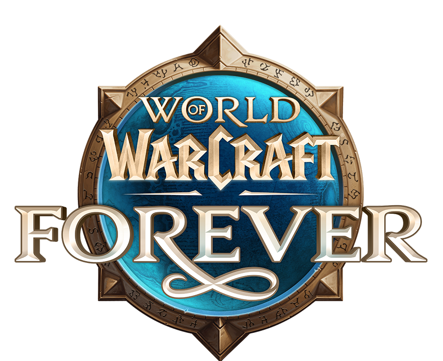

Bereit für Forever?
Melde dich mit deinem eigenen Forever-SpielerLogin an. Deine Forever-Charaktere und Termine verwaltest du hier in einem eigenen Bereich.
Era-SpielerLogins werden nicht übernommen. Erstelle hier einen eigenen Forever-Zugang.
Spieleraccount erstellen →